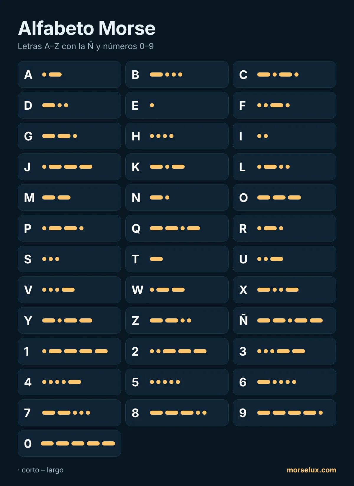

- Escucha, no cuentes. A velocidad real no se pueden contar puntos y rayas; cada letra se oye como un solo patrón de sonido.
- Los opuestos ayudan: A (·–) y N (–·), D (–··) y U (··–), G (––·) y W (·––) son imágenes reflejadas.
- Practica poco y a menudo. Diez o quince minutos al día funcionan mejor que una sesión larga a la semana.
- Úsalo. Escribe una palabra en el traductor de código Morse e intenta oír las letras antes de leerlas.
MorseLux › Alfabeto
·–·· ··– –··– Tabla · toca para escuchar
Alfabeto Morse
Todas las letras, números y signos del código Morse internacional, con la Ñ. Toca un signo para escuchar cómo suena: así se aprende Morse de verdad.
Abecedario Morse: letras A–Z
Números en código Morse (0–9)
Los números siempre tienen cinco señales, así que son fáciles de aprender: del 1 al 5 empiezan con puntos y del 6 al 0 con rayas.

Ñ y letras especiales
Estas letras forman parte del código Morse ampliado. Si el receptor no las conoce, se envía la letra sin tilde (N en lugar de Ñ).
| Signo | Morse | Escuchar |
|---|---|---|
| Ä | ·–·– | |
| Ö | –––· | |
| Ü | ··–– | |
| ß | ···––·· | |
| Ñ | ––·–– | |
| É | ··–·· | |
| À | ·––·– | |
| È | ·–··– | |
| Ç | –·–·· | |
| Ğ | ––·–· | |
| Ş | ·––·· |
Signos de puntuación
| Signo | Morse | Escuchar |
|---|---|---|
| . | ·–·–·– | |
| , | ––··–– | |
| ? | ··––·· | |
| ' | ·––––· | |
| ! | –·–·–– | |
| / | –··–· | |
| ( | –·––· | |
| ) | –·––·– | |
| & | ·–··· | |
| : | –––··· | |
| ; | –·–·–· | |
| = | –···– | |
| + | ·–·–· | |
| - | –····– | |
| _ | ··––·– | |
| " | ·–··–· | |
| $ | ···–··– | |
| @ | ·––·–· |
Consejos para aprender el alfabeto
Preguntas frecuentes
¿Cuántos signos tiene el alfabeto Morse?
El código Morse internacional tiene códigos para las 26 letras A–Z, los diez dígitos 0–9 y los signos de puntuación habituales; algunos (! $ ; _) son de uso común, pero no forman parte de la norma de la UIT. Algunos idiomas añaden letras propias, como la Ñ en español.
¿Cómo se escribe la Ñ en Morse?
La Ñ es ––·–– (raya, raya, punto, raya, raya). Si el receptor no la conoce, se puede enviar como N.
¿Cuál es la forma más fácil de memorizar el alfabeto Morse?
Aprender el sonido, no el dibujo. Escucha cada letra como un ritmo en lugar de contar puntos y rayas, y empieza solo con dos letras (E y T). Nuestra guía paso a paso explica cómo hacerlo. Puedes practicar ahora mismo con el entrenador Morse gratuito.
¿Qué letras son las más cortas en Morse?
La E (·) y la T (–), porque son las más frecuentes en inglés. Les siguen la I (··), la A (·–), la N (–·) y la M (––) con dos señales cada una.
¿Hay un código Morse para el espacio?
No: un espacio es una pausa. Entre letras se esperan tres unidades y entre palabras siete. Por escrito, las letras se separan con un espacio y las palabras con una barra (/).
¿Puedo imprimir la tabla Morse?
Sí. Descarga el PDF gratuito en A4 con todas las letras, la Ñ, los números y los signos, o usa la función de imprimir del navegador (Ctrl+P o ⌘P).
¿Es lo mismo alfabeto Morse, abecedario Morse y clave Morse?
Sí. Son nombres distintos para la misma tabla de puntos y rayas. En España se dice más «alfabeto Morse» y en muchos países de América Latina también «clave Morse».
¿Cómo recuerdo los números en código Morse?
Los números siempre tienen cinco signos: del 1 al 5 empiezan con puntos (1 = ·–––– 5 = ·····) y del 6 al 0 con rayas (6 = –···· 0 = –––––).